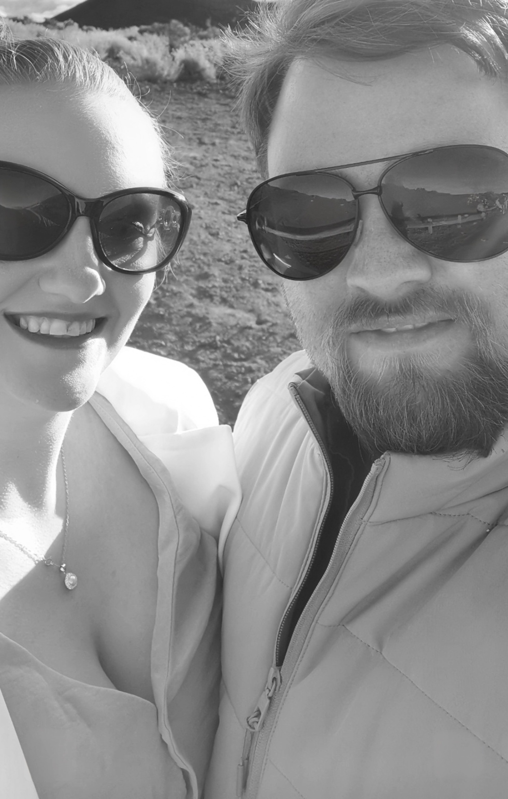
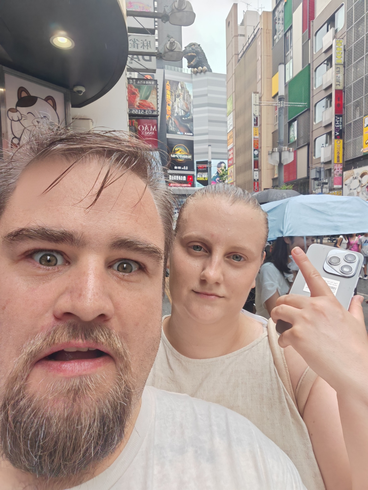

Venue
Lartington Hall, County Durham. A beautiful historic estate with gardens, manor rooms, and warm hospitality.
A personal invitation
invite you to celebrate their wedding at
Lartington Hall · 28 Feb 2027 · 12:30 PM
Our story
Our story began in the summer of 2021, when Gavin joined Match.com “just to support a friend,” then immediately forgot that noble mission and messaged Jess instead. Against all known laws of online dating, it became one of those rare internet matches that actually works; the kind people swear only happens in adverts.
We met at South Shields seafront for what was meant to be a quick chat. Instead, we talked for so long that the pub had to politely escort us out because we didn’t notice it was closing. It was the kind of first date that makes you think, “Okay… either this is fate, or we’ve both accidentally catfished each other in a good way.”
Since then, life together has been a blend of romance, chaos, and Gavin’s questionable navigation skills. With holidays to Tenerife, London, and Japan, where Gavin managed to get us lost in Shinjuku Station for hours while searching for Godzilla’s head. We eventually ended up four miles in the wrong direction, wandering through the business district like two tourists who’d lost both the plot and the map.
In January 2024, we bought our first home. Within a week, we also adopted our dog, Zico. Jess had rules: small to medium dog, sensible breed, manageable size. Gavin ignored every single one. He returned with a 50kg German Shepherd–Belgian Malinois mix who has the energy of a caffeinated toddler, the opinions of a talk‑show host, and the vocal range of a foghorn. He loves everyone, never stops talking, and argues with Gavin daily, and loudly, like a furry, four‑legged union rep, often winning.
That summer, Gavin proposed, dropping to one knee like a budget Disney prince who’d rehearsed this moment in his head a thousand times. Jess, five duck‑sauce cocktails deep, responded with the immortal words: “Are you serious or taking the piss?” Gavin remained on one knee long enough to consider early retirement, but eventually she said yes.
Jess insisted on a ruby ring, not because she “didn’t want anything too expensive,” but because ruby is the birthstone they share. Born 368 days apart it felt like the perfect symbol of two lives that were always meant to meet.
Now, after years of travel, laughter, late‑night conversations, and one very spoiled dog, we’re ready for the next chapter; and we can't wait to celebrate it with you.



Lartington Hall, County Durham. A beautiful historic estate with gardens, manor rooms, and warm hospitality.
12:30 PM ceremony, followed by reception and dinner. Please arrive 20 minutes early for seating.
Confirm your attendance on the RSVP page, or email rsvp@yourdomain.com.